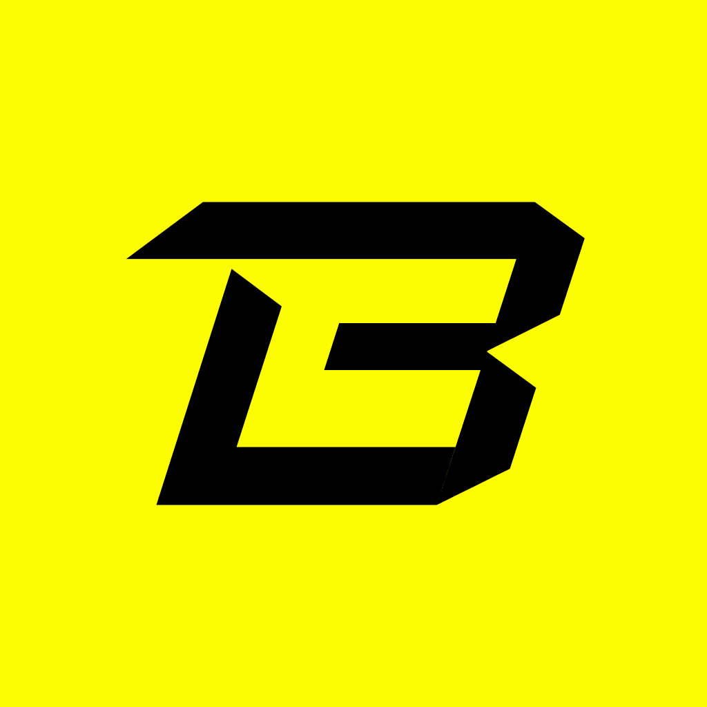
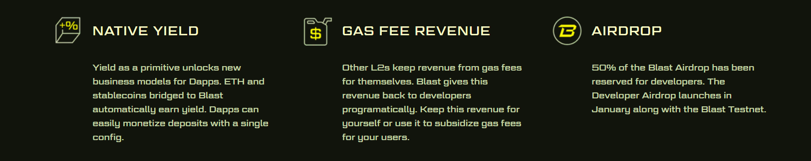

①
Fund the wallet safely
Bridge funds to Blast using official links, keep an ETH gas buffer, and confirm balances in explorers. “Wallet UI looks fine” is not proof—verify receipts when it matters.

Blast Yield Farm is a practical, safety-first guide for yield farming on Blast Mainnet in 2026. Learn how farms work (LP → stake → earn), where yield comes from, what fees you really pay, the biggest risks (impermanent loss, liquidation, smart contract risk, bridge risk), and a repeatable workflow for entering and exiting positions with verification-first habits.
Bridge funds to Blast using official links, keep an ETH gas buffer, and confirm balances in explorers. “Wallet UI looks fine” is not proof—verify receipts when it matters.
Most farms require LP tokens (two-asset liquidity). Understand price exposure and impermanent loss. For simpler risk, consider single-asset strategies where available.
Approve only what you need, stake your LP tokens, and confirm the staking tx on-chain. Track the farm terms: emission token, lockups, and reward schedule.
Monitor IL, rewards vs. fees, and protocol health. Claim rewards when economical, and keep an exit plan: unstake → remove liquidity → swap back → withdraw if needed.
A Blast yield farm is typically a strategy where you provide liquidity (or hold a qualifying asset), then stake a receipt token (often an LP token) to earn rewards. Your outcome depends on: price exposure, reward emissions, fees, and risk events.
Users comfortable with DeFi mechanics who can monitor positions, understand IL, and follow a disciplined entry/exit process.
Anyone who can’t handle volatility, can’t monitor positions, or is tempted to chase APY without a risk plan.
“APY” in a yield farm is usually a combination of several components. Understanding the breakdown helps you avoid traps like high headline yield with low realizable returns after fees, slippage, and emissions decay.
| APY component | What it is | Operational note |
|---|---|---|
| Trading fees | Swap fees earned by LPs | Depends on volume; can shrink fast in quiet markets. |
| Reward emissions | Incentive tokens distributed to stakers | Often the biggest APY driver; can decay or be diluted. |
| Boosts / multipliers | Extra rewards for locks/ve models | Usually increases lock risk; evaluate exit constraints. |
| Reinvestment (compounding) | Auto-compound or manual reinvest | Works only if claim + swap fees don’t dominate. |

Yield farming risks are not equal. The high-impact risks below can dominate returns and should shape your position sizing.
| Risk | What happens | How to reduce impact |
|---|---|---|
| Impermanent loss (IL) | Your LP value underperforms holding tokens due to price moves | Prefer correlated pairs; size smaller; monitor volatility. |
| Smart contract risk | Bug/exploit drains pools or farms | Use reputable protocols; diversify; avoid “unknown forks”. |
| Reward token drawdown | Emissions token falls, reducing realized yield | Harvest + convert periodically; don’t over-rely on emissions. |
| Liquidity / exit risk | Hard to unwind without slippage, or lockups prevent exit | Avoid long locks unless compensated; check TVL and depth. |
| Bridge / funding risk | Issues moving funds to/from Blast | Test small first; verify receipts in explorers. |
Farming returns are net of friction. A realistic model includes: swap slippage, LP deposit/withdraw costs, approval transactions, claim/harvest costs, and any reinvestment swaps.
| Cost line | Where it comes from | How to reduce it |
|---|---|---|
| Approvals | ERC-20 allowances for router/farm | Use limited approvals; avoid unlimited on main wallets. |
| Swaps + slippage | Buying pair tokens and converting rewards | Use liquid routes; avoid volatile thin markets. |
| Add/remove liquidity | Minting/burning LP tokens | Batch actions; avoid tiny frequent rebalances. |
| Claim/harvest | Collecting rewards on-chain | Harvest only when it’s economical vs gas and slippage. |
Most farming losses come from unsafe approvals, interacting with the wrong contracts, or using fake frontends. Treat verification as part of the workflow.
| What to verify | Where to check | What “good” looks like |
|---|---|---|
| Official links | Bookmarks / trusted sources | You are not using ads/search results for critical actions. |
| Contract addresses | Explorer | Farm/router contracts match official docs/community references. |
| Allowances | Wallet + revoke tools | Limited approvals, especially from high-value wallets. |
| Tx receipts | Explorer | Add/Remove LP and Stake/Unstake receipts confirm expected events. |
Keep this block clean and credible. Official resources + explorers + security tools are the strongest EEAT signals for farming content.
A Blast yield farm typically involves providing liquidity (LP) and staking LP tokens to earn rewards. Returns depend on emissions, trading fees, token prices, and risks like IL and smart contract issues.
No. High APY can come from volatile emissions, thin liquidity, or unsustainable incentives. Focus on net returns after fees, risk, and your ability to exit.
Impermanent loss is when providing liquidity underperforms simply holding the tokens due to price divergence. It can dominate returns on volatile pairs.
Harvesting too often can waste fees. A practical approach is to harvest on a schedule (e.g., weekly) based on position size and expected conversion costs.
Start with a small position, use reputable protocols, keep gas buffer, limit approvals, and verify contract addresses and receipts in explorers before scaling.
Often it’s UI caching or accrual timing. Refresh/reconnect and confirm your staking position and transactions in an explorer for the source of truth.